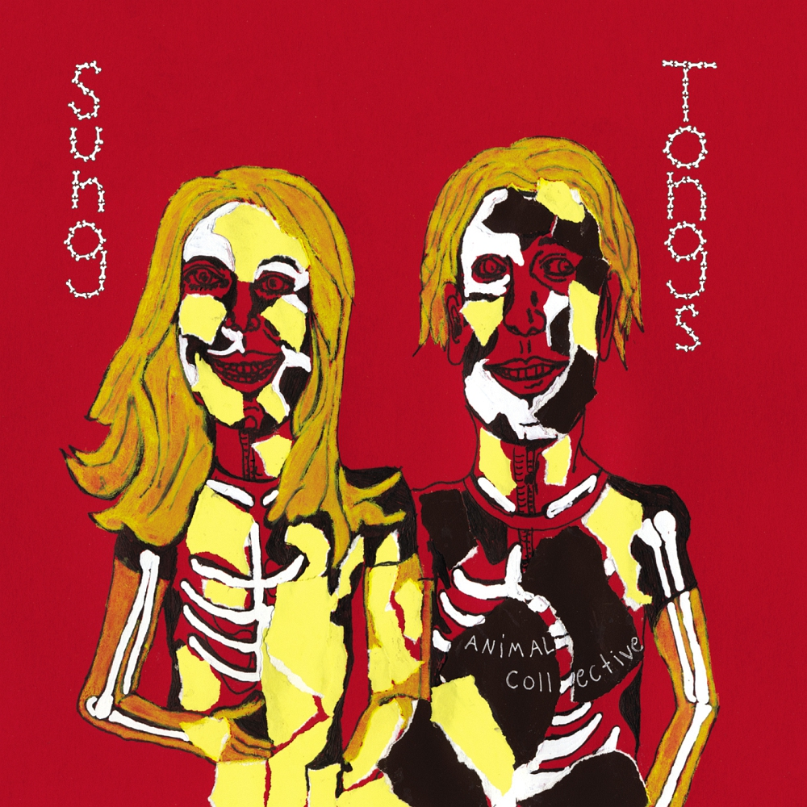

Ambient Trance, Progressive Breaks
Ferraro's Masterwork
In a 2012 interview with James Ferraro conducted by Le Drone, James Ferraro would be given the opportunity to explain his music to a wider audience while also provide insights into the themes prevalent in his music. However, upon hearing him attempt to describe his works, he frequently stumbled and stuttered like the words themselves were caught in his mouth. Ferraro himself had no idea how to explain his art, which is surprisingly common among most other creatives. When creating any form of art, things just tend to happen without rhyme or reason with themes that naturally interest the artist being naturally included in these works. One may say it's mindless, but it's in fact a sort of trance-like state that someone enters when in a creative state.
When James Ferraro and Yves Tumor went on stage during Primavera Sound 2012, both of them entered that sort of creative zone that allowed them to work together seamlessly. This duo ended up creating a tropical progressive trance epic with notable new age influences. This set consists mostly skeuomorphic sounding synths designed to sound like instruments you'd hear in a new age album, and are backed by a traditional breakbeat and a repetitive bass line. While it may be unique from a EDM standpoint, something like this isn't totally out of Ferraro's range. Like in his previous works, themes of hyperreality, futurism, and consumer culture are still prevalent, while albeit in a more streamlined sense. Ferraro's strong suit in his music is most definitely world building, something that was more noticeable in his earlier works. That world building is still present here, this time taking you into a tropical setting resembling something of an over exaggerated zoo.
While the sound may be different from his other albums, this live set still possesses all the aspects that made Ferraro so great around this time, and I highly recommend this one to anyone who is wanting to get into Ferraro's discography. It's got Ferraro's world-building, ironic themes, and synthetic sound, all staples of his music as a whole.

Visiting Friends
i've tried to write this review a couple times and i've failed each time . i don't think i'll ever be able to properly do this album justice with a review, but this is the closest i think i'll get . suppose i'll start this with a simple statement:
this is my favorite album of all time
there's something so comforting about this to me, something about the incredibly limited production and how anco manages to use it to its limits . something about how free this entire album feels too, so much creativity on display without being restrained by themselves .
this albums sound is idiosyncratic, and i fear it won't ever be replicated properly . again, the limited production being pushed to its limits and the sheer amount of creativity leads to something entirely unique, you can very much tell that they had fun making this album, especially on tracks like Who Could Win A Rabbit or We Tigers, where there is so much energy in the recordings at hand it's simply impossible for me to not join in with their whimsy
let me go a bit back to "you can very much tell that they had fun making this album" . because that's a sort of a mindset that i stand by in music . that you don't always need to make a grand artistic statement, you just simply need a vision for what you want to make and make it . don't compromise that vision, just do it . this is something i hold close to myself, even with my own musical endeavors .
while that alone is a big factor for why this is my favorite album of all time, there's another thing i want to talk about with this album: Visiting Friends
this song alone completely changed my life, and i doubt i'd even be alive had i not discovered it . i'm not too huge on reviewing music like this as it stems from bias a lot of the time, but i still want to share this .
i'll paint the picture for you . it was about 6 in the evening, and i was walking home after, funnily enough, visiting a friend . as i was walking back, i was listening to Visiting Friends . i was living in quite the depressive hole back then, my life was pretty much in shambles and i was lost .
i don't know what exactly clicked in my head that night, but listening to that song in that moment made me appreciate all the things that surrounded me . the cars passing by, the trees swaying in the wind, the birds flying together and singing, everything felt like it had a purpose .
there's a moment in the song at 8:11 where everything sort of "blooms" in the song . there's these odd vocal bits that appear throughout the song but only in that moment do they really shine . as if you're reflecting upon the past and your memories, but they're distorted as the time keeps passing in your head . that combined with the emotionally powerful free folk playing alongside it led to me feeling okay for once . okay as in for once i felt relief from everything else that was going on, and i was able to appreciate everything for once
i love everything about this album . i could go on forever about this album, i could go on about the more whimsical and joyous tracks like Winters Love or Sweet road, or the more hazy and mellow tracks like Kids On Holiday, Mouth Wooed Her and The Softest Voice . i'm almost definitely going to come back and edit this review with more things to say . however, as it stands, i've said everything i need to in this review .
with that said, i don't think anything in my life has quite had the impact that this album has had on me, and i am immensely thankful that this album exists and found me when i needed it most . this is everything i could ever want music to be: free
love